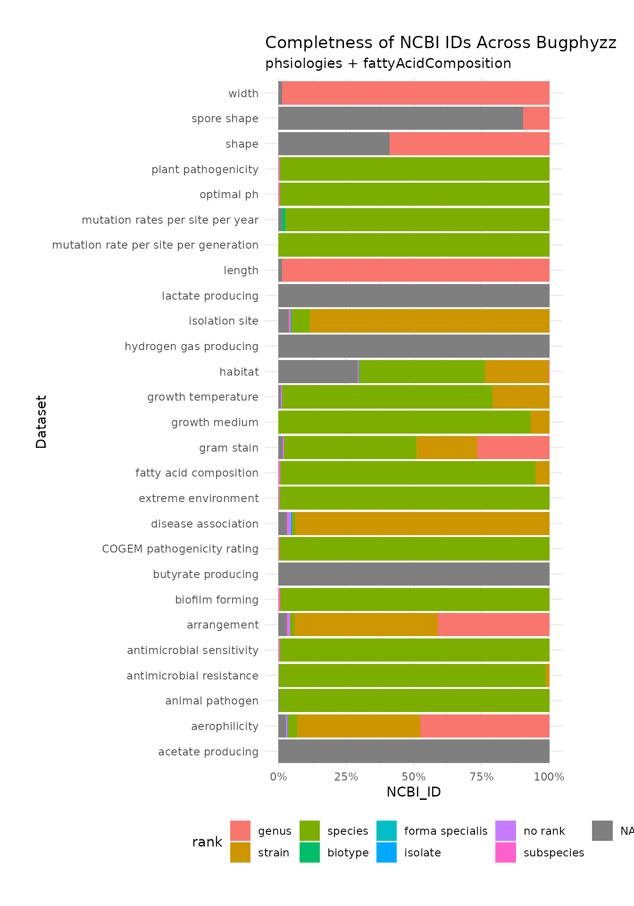

completeness_annotations.RmdThe ncbi_taxonomy_rank_table table (code below) contains the taxonomy rank for each unique NCBI ID in bugphyzz (including the datasets accessed through both the physiologies and the fattyAcidComposition functions).
The taxonomy ranks were retrieved with taxize::classification, and all the ranks were merged into a table.
The table also contains the full NCBI taxonomy classification for each ID.
reshape_taxon_table <- function(x, type) {
if (tail(x$rank, 1) == "no rank") {
x$rank[length(x$rank)] <- "no_rank"
}
x <- x[!x$rank %in% c("no rank", "clade"), ]
tibble::as_tibble(t(x[type]), .name_repair = "minimal") %>%
magrittr::set_colnames(gsub(" ", "_", x$rank))
}
physiologies <- physiologies()
fac <- fattyAcidComposition()
ncbi_ids_physiologies <- unlist(lapply(physiologies, function(x) as.integer(x$NCBI_ID)))
ncbi_ids_fac <- as.integer(fac$NCBI_ID)
ncbi_ids <- unique(c(ncbi_ids_physiologies, ncbi_ids_fac))
ncbi_ids <- ncbi_ids[!is.na(ncbi_ids)]
# get taxonomy
taxonomies <- suppressMessages(taxize::classification(ncbi_ids, db = "ncbi"))
# convert taxonomy to table
taxonomy_table <- lapply(taxonomies, function(x) reshape_taxon_table(x, type = "name")) %>%
dplyr::bind_rows(.id = "NCBI_ID")
# get ranks
rank_table <- taxonomies %>%
vapply(function(x) tail(x$rank, 1), character(1)) %>%
tibble::as_tibble(rownames = "NCBI_ID") %>%
set_colnames(c("NCBI_ID", "rank"))
# merge both
ncbi_taxonomy_rank_table <- dplyr::left_join(rank_table, taxonomy_table, by = "NCBI_ID")
ncbi_taxonomy_rank_table$NCBI_ID <- as.numeric(ncbi_taxonomy_rank_table$NCBI_ID)| rank | n |
|---|---|
| species | 2765 |
| genus | 1488 |
| strain | 1301 |
| no rank | 13 |
| subspecies | 10 |
| isolate | 6 |
| biotype | 1 |
| forma specialis | 1 |
dfs <- physiologies %>%
map(~ {.x$NCBI_ID <- as.numeric(.x$NCBI_ID); .x}) %>%
map(~ left_join(.x, ncbi_taxonomy_rank_table, by = "NCBI_ID")) %>%
map(~.x[,c("NCBI_ID", "rank")])
dfs[["fatty acid composition"]] <- left_join(fac, ncbi_taxonomy_rank_table, by = "NCBI_ID" ) %>%
select(NCBI_ID, rank)
data <- bind_rows(dfs, .id = "dataset")
data %>%
mutate(rank = forcats::fct_relevel(rank, "genus", "strain", "species")) %>%
ggplot(aes(dataset)) +
geom_bar(aes(fill = rank), position = "fill") +
scale_y_continuous(label = scales::percent) +
labs(x = "Datase´", y = "NCBI_ID",
title = "Completness of NCBI IDs Across Bugphyzz",
subtitle = "phsiologies + fattyAcidComposition") +
coord_flip() +
theme_minimal() +
theme(legend.position = "bottom")
attributeSummaryByRank functionThis function (attributeSummaryByRank) takes a dataset from bugphyzz and creates a table summarizing the number of NCBI IDs per rank per attribute. In other words, this function gives information about how many genera, species, and strains exist per attribute. It does not take inherited ranks into account.
The output is a matrix-like table in which the row names are the attributes, the column names are the ranks, and the values are the number of NCBI IDs with the percentage in parentheses. The percentage is relative to the total number of NCBI IDs in the dataset (it sums 100 per row).
NA’s in the column names of the output indicate taxa without NCBI ID.
A no_rank in the column names indicate organisms not properly classified in the NCBI taxonomy database, like some strains, pathovar, etc.
attributeSummaryByRank <- function(x, y, categorical = TRUE) {
if (isTRUE(categorical)) {
df <- x[[y]] %>%
dplyr::filter(Attribute_value == TRUE)
} else if (isFALSE(categorical)) {
df <- x[[y]]
}
df %>%
dplyr::select(Attribute, rank, NCBI_ID) %>%
dplyr::mutate(
rank = forcats::fct_relevel(rank, "genus", "strain", "species"),
Attribute = stringr::str_squish(Attribute)
) %>%
dplyr::count(Attribute, rank) %>%
dplyr::group_by(Attribute) %>%
dplyr::mutate(
percent = round(n / sum(n) * 100, 2),
`n (%)` = paste0(n, " (", percent, ")")
) %>%
dplyr::ungroup() %>%
dplyr::select(Attribute, rank, `n (%)`) %>%
dplyr::arrange(Attribute, rank) %>%
tidyr::pivot_wider(names_from = "rank", values_from = `n (%)`) %>%
# tibble::column_to_rownames(var = "Attribute") %>%
as.data.frame() %>%
knitr::kable(row.names = TRUE)
}
categorical_phys <- physiologies %>%
keep(~is.logical(.x$Attribute_value)) %>%
map( ~ left_join( .x, ncbi_taxonomy_rank_table, by = "NCBI_ID"))
categorical_phys_names <- names(categorical_phys)
categorical_phys_names## [1] "animal pathogen" "antimicrobial resistance"
## [3] "antimicrobial sensitivity" "biofilm forming"
## [5] "arrangement" "shape"
## [7] "extreme environment" "gram stain"
## [9] "growth medium" "habitat"
## [11] "aerophilicity" "plant pathogenicity"
## [13] "spore shape" "isolation site"
## [15] "disease association"attributeSummaryByRank to all categorical datasets:
summary_tables <- map(categorical_phys_names, ~ attributeSummaryByRank(categorical_phys, .x)) %>%
set_names(categorical_phys_names)
summary_tables$`antimicrobial resistance`| Attribute | species | no rank | strain | |
|---|---|---|---|---|
| 1 | carbapenem-resistant Acinetobacter | 36 (100) | NA | NA |
| 2 | not resistant to beta-lactam | 22 (95.65) | 1 (4.35) | NA |
| 3 | resistance to amikacin | 159 (100) | NA | NA |
| 4 | resistance to aztreonam | 31 (100) | NA | NA |
| 5 | resistance to capreomycin | 158 (100) | NA | NA |
| 6 | resistance to cefepime | 34 (100) | NA | NA |
| 7 | resistance to cefoxitin | 26 (100) | NA | NA |
| 8 | resistance to chloramphenicol | 4 (100) | NA | NA |
| 9 | resistance to ciprofloxacin | 118 (100) | NA | NA |
| 10 | resistance to clindamycin | 132 (100) | NA | NA |
| 11 | resistance to ertapenem | 16 (100) | NA | NA |
| 12 | resistance to erythromycin A | 187 (100) | NA | NA |
| 13 | resistance to ethambutol | 206 (100) | NA | NA |
| 14 | resistance to gentamicin | 147 (100) | NA | NA |
| 15 | resistance to imipenem | 20 (100) | NA | NA |
| 16 | resistance to isoniazid | 352 (100) | NA | NA |
| 17 | resistance to kanamycin A | 164 (100) | NA | NA |
| 18 | resistance to levofloxacin | 27 (100) | NA | NA |
| 19 | resistance to meropenem | 15 (100) | NA | NA |
| 20 | resistance to methicillin | 196 (100) | NA | NA |
| 21 | resistance to ofloxacin | 116 (100) | NA | NA |
| 22 | resistance to penicillin | 288 (100) | NA | NA |
| 23 | resistance to piperacillin | 26 (100) | NA | NA |
| 24 | resistance to rifampicin | 311 (98.42) | NA | 5 (1.58) |
| 25 | resistance to streptomycin | 533 (99.81) | NA | 1 (0.19) |
| 26 | resistance to tetracycline | 98 (100) | NA | NA |
| 27 | resistance to tobramycin | 34 (100) | NA | NA |
| 28 | resistance to trimethoprim | 82 (100) | NA | NA |
| 29 | resistant to beta-lactam | 10 (100) | NA | NA |
| 30 | sensitive to amikacin | 654 (98.05) | NA | 13 (1.95) |
| 31 | sensitive to aztreonam | 21 (100) | NA | NA |
| 32 | sensitive to capreomycin | 603 (97.89) | NA | 13 (2.11) |
| 33 | sensitive to carbapenems | 106 (99.07) | NA | 1 (0.93) |
| 34 | sensitive to cefoxitin | 26 (100) | NA | NA |
| 35 | sensitive to chloramphenicol | 27 (96.43) | 1 (3.57) | NA |
| 36 | sensitive to ciprofloxacin | 313 (100) | NA | NA |
| 37 | sensitive to clindamycin | 247 (100) | NA | NA |
| 38 | sensitive to ertapenem | 36 (100) | NA | NA |
| 39 | sensitive to erythromycin A | 223 (99.55) | 1 (0.45) | NA |
| 40 | sensitive to ethambutol | 555 (97.71) | NA | 13 (2.29) |
| 41 | sensitive to gentamicin | 284 (100) | NA | NA |
| 42 | sensitive to imipenem | 31 (100) | NA | NA |
| 43 | sensitive to isoniazid | 416 (95.85) | NA | 18 (4.15) |
| 44 | sensitive to kanamycin A | 603 (97.1) | NA | 18 (2.9) |
| 45 | sensitive to levofloxacin | 45 (97.83) | NA | 1 (2.17) |
| 46 | sensitive to meropenem | 37 (100) | NA | NA |
| 47 | sensitive to methicillin | 190 (100) | NA | NA |
| 48 | sensitive to ofloxacin | 651 (97.31) | NA | 18 (2.69) |
| 49 | sensitive to penicillin | 91 (100) | NA | NA |
| 50 | sensitive to piperacillin | 26 (100) | NA | NA |
| 51 | sensitive to rifampicin | 456 (97.23) | NA | 13 (2.77) |
| 52 | sensitive to streptomycin | 234 (93.23) | NA | 17 (6.77) |
| 53 | sensitive to tetracycline | 382 (99.74) | 1 (0.26) | NA |
| 54 | sensitive to trimethoprim | 380 (99.74) | 1 (0.26) | NA |
summary_tables$`antimicrobial sensitivity`| Attribute | species | no rank | subspecies | |
|---|---|---|---|---|
| 1 | antimicrobial sensitivity | 484 (99.38) | 2 (0.41) | 1 (0.21) |
summary_tables$`biofilm forming`| Attribute | species | subspecies | |
|---|---|---|---|
| 1 | biofilm formation | 280 (99.29) | 2 (0.71) |
summary_tables$arrangement| Attribute | genus | strain | species | no rank | subspecies | NA | |
|---|---|---|---|---|---|---|---|
| 1 | branched | 90 (78.95) | 20 (17.54) | 4 (3.51) | NA | NA | NA |
| 2 | cell chain | 111 (39.5) | 165 (58.72) | 1 (0.36) | 2 (0.71) | 2 (0.71) | NA |
| 3 | cell cluster | 73 (66.36) | 35 (31.82) | NA | 2 (1.82) | NA | NA |
| 4 | paired cells | 195 (41.67) | 243 (51.92) | 4 (0.85) | 5 (1.07) | 2 (0.43) | 19 (4.06) |
| 5 | palisade | 4 (100) | NA | NA | NA | NA | NA |
| 6 | rosettes | 9 (100) | NA | NA | NA | NA | NA |
| 7 | single | 228 (28.93) | 495 (62.82) | 21 (2.66) | 7 (0.89) | 1 (0.13) | 36 (4.57) |
| 8 | tetrads | 20 (76.92) | 6 (23.08) | NA | NA | NA | NA |
| 9 | unbranched | 11 (100) | NA | NA | NA | NA | NA |
| 10 | v-branched filaments | NA | 1 (100) | NA | NA | NA | NA |
| 11 | v-formations | 8 (100) | NA | NA | NA | NA | NA |
| 12 | y-branched formations | 3 (100) | NA | NA | NA | NA | NA |
summary_tables$shape| Attribute | genus | NA | |
|---|---|---|---|
| 1 | bacillus | 882 (49.27) | 908 (50.73) |
| 2 | bent filament | 5 (100) | NA |
| 3 | clavate | 11 (100) | NA |
| 4 | coccobacillus | 37 (100) | NA |
| 5 | coccus | 324 (54) | 276 (46) |
| 6 | discoid | 11 (100) | NA |
| 7 | dumbbell-shaped | 1 (100) | NA |
| 8 | elliptic | 128 (100) | NA |
| 9 | filamentous | 36 (61.02) | 23 (38.98) |
| 10 | flat | 5 (100) | NA |
| 11 | pleiomorphic cell | 93 (100) | NA |
| 12 | polyhedral shape | 1 (100) | NA |
| 13 | rectangle | 1 (100) | NA |
| 14 | sigmoid | 2 (100) | NA |
| 15 | spirillum | 62 (48.82) | 65 (51.18) |
| 16 | square | NA | 1 (100) |
| 17 | tetrahedral | 2 (100) | NA |
| 18 | triangle | 7 (100) | NA |
| 19 | u-shaped | 2 (100) | NA |
| 20 | vibriod cell | 239 (97.55) | 6 (2.45) |
| 21 | wrinkled | 1 (100) | NA |
summary_tables$`extreme environment`| Attribute | species | subspecies | |
|---|---|---|---|
| 1 | Extreme environment | 561 (99.64) | 2 (0.36) |
summary_tables$`gram stain`| Attribute | genus | strain | species | forma specialis | isolate | no rank | subspecies | NA | |
|---|---|---|---|---|---|---|---|---|---|
| 1 | gram stain negative | 843 (25.95) | 749 (23.05) | 1581 (48.66) | 1 (0.03) | 6 (0.18) | 7 (0.22) | 1 (0.03) | 61 (1.88) |
| 2 | gram stain positive | 435 (26.27) | 369 (22.28) | 830 (50.12) | NA | NA | 4 (0.24) | 7 (0.42) | 11 (0.66) |
| 3 | gram stain variable | 45 (72.58) | NA | 17 (27.42) | NA | NA | NA | NA | NA |
summary_tables$`growth medium`| Attribute | species | strain | |
|---|---|---|---|
| 1 | 10% salts | 1 (100) | NA |
| 2 | 20% salts | 1 (100) | NA |
| 3 | 30% salts | 1 (100) | NA |
| 4 | 5% salts | 5 (100) | NA |
| 5 | 5% sheep blood agar | 1 (100) | NA |
| 6 | artificial seawater | 55 (100) | NA |
| 7 | asp-2 | 4 (100) | NA |
| 8 | bg11 | 31 (67.39) | 15 (32.61) |
| 9 | brackish microbiological culture medium | 1 (100) | NA |
| 10 | c | 2 (100) | NA |
| 11 | casitone-yeast extract agar | 1 (100) | NA |
| 12 | charcoal-yeast extract | 2 (100) | NA |
| 13 | chocolate agar | 2 (100) | NA |
| 14 | conway | 5 (100) | NA |
| 15 | defined microbiological culture medium | 4 (50) | 4 (50) |
| 16 | DSMZ Medium 1000 | 1 (100) | NA |
| 17 | fildes enrichment | 2 (100) | NA |
| 18 | gse | 3 (100) | NA |
| 19 | heart infusion agar | 11 (100) | NA |
| 20 | lb agar | 1 (100) | NA |
| 21 | lb medium | 8 (100) | NA |
| 22 | medium 31 agar | 4 (100) | NA |
| 23 | modified shieh agar | 10 (100) | NA |
| 24 | mrs broth | 4 (100) | NA |
| 25 | mueller-hinton | 2 (100) | NA |
| 26 | nutrient broth | 8 (100) | NA |
| 27 | pyg medium | 4 (100) | NA |
| 28 | sm agar | 2 (100) | NA |
| 29 | staley pyg | 3 (100) | NA |
| 30 | tryptic soy agar | 92 (100) | NA |
| 31 | tryptic soy broth | 2 (50) | 2 (50) |
| 32 | ZoBell marine agar | 10 (100) | NA |
summary_tables$habitat| Attribute | strain | species | NA | forma specialis | isolate | no rank | subspecies | genus | |
|---|---|---|---|---|---|---|---|---|---|
| 1 | air | 1 (50) | 1 (50) | NA | NA | NA | NA | NA | NA |
| 2 | aquatic | 176 (87.13) | 23 (11.39) | 3 (1.49) | NA | NA | NA | NA | NA |
| 3 | colonization of host | 448 (46.14) | 485 (49.95) | 27 (2.78) | 1 (0.1) | 2 (0.21) | 6 (0.62) | 2 (0.21) | NA |
| 4 | creosote-contaminated soil | NA | 1 (100) | NA | NA | NA | NA | NA | NA |
| 5 | dairy | 1 (100) | NA | NA | NA | NA | NA | NA | NA |
| 6 | fresh water | 36 (87.8) | 4 (9.76) | 1 (2.44) | NA | NA | NA | NA | NA |
| 7 | groundwater | NA | NA | 1 (100) | NA | NA | NA | NA | NA |
| 8 | hot spring | 8 (53.33) | 1 (6.67) | 6 (40) | NA | NA | NA | NA | NA |
| 9 | human gut microbiome | NA | NA | 645 (100) | NA | NA | NA | NA | NA |
| 10 | human microflora | 1 (50) | NA | 1 (50) | NA | NA | NA | NA | NA |
| 11 | human urine | NA | 1 (11.11) | NA | NA | NA | NA | NA | 8 (88.89) |
| 12 | hydrothermal vent | 2 (40) | NA | 3 (60) | NA | NA | NA | NA | NA |
| 13 | hypersaline salinity | NA | NA | 1 (100) | NA | NA | NA | NA | NA |
| 14 | intestinal microflora | 3 (100) | NA | NA | NA | NA | NA | NA | NA |
| 15 | marine water body | 11 (55) | 4 (20) | 5 (25) | NA | NA | NA | NA | NA |
| 16 | mud | 5 (71.43) | NA | 2 (28.57) | NA | NA | NA | NA | NA |
| 17 | multiple | 287 (90.25) | 16 (5.03) | 10 (3.14) | NA | NA | 3 (0.94) | 2 (0.63) | NA |
| 18 | non-host associated | NA | NA | 550 (100) | NA | NA | NA | NA | NA |
| 19 | not host-associated | 1 (0.05) | 1868 (98.84) | 6 (0.32) | NA | NA | 2 (0.11) | 4 (0.21) | 9 (0.48) |
| 20 | ocean trench | 1 (33.33) | NA | 2 (66.67) | NA | NA | NA | NA | NA |
| 21 | oil field production water | 1 (50) | NA | 1 (50) | NA | NA | NA | NA | NA |
| 22 | oral | NA | NA | 58 (100) | NA | NA | NA | NA | NA |
| 23 | other host associated | NA | NA | 108 (100) | NA | NA | NA | NA | NA |
| 24 | pond | 1 (100) | NA | NA | NA | NA | NA | NA | NA |
| 25 | rhizosphere | 1 (100) | NA | NA | NA | NA | NA | NA | NA |
| 26 | rice paddies | 1 (100) | NA | NA | NA | NA | NA | NA | NA |
| 27 | root nodule | 1 (100) | NA | NA | NA | NA | NA | NA | NA |
| 28 | rumen | NA | NA | 69 (100) | NA | NA | NA | NA | NA |
| 29 | saline water | 1 (100) | NA | NA | NA | NA | NA | NA | NA |
| 30 | sea water | 3 (50) | 2 (33.33) | 1 (16.67) | NA | NA | NA | NA | NA |
| 31 | sediment | 4 (44.44) | 1 (11.11) | 4 (44.44) | NA | NA | NA | NA | NA |
| 32 | sludge | 5 (62.5) | NA | 3 (37.5) | NA | NA | NA | NA | NA |
| 33 | soil | 24 (61.54) | 7 (17.95) | 8 (20.51) | NA | NA | NA | NA | NA |
| 34 | specialized | 127 (88.19) | 14 (9.72) | 2 (1.39) | NA | 1 (0.69) | NA | NA | NA |
| 35 | submarine | NA | NA | 1 (100) | NA | NA | NA | NA | NA |
| 36 | sulfur spring | NA | NA | 1 (100) | NA | NA | NA | NA | NA |
| 37 | terrestrial biome | 77 (86.52) | 8 (8.99) | 2 (2.25) | NA | 2 (2.25) | NA | NA | NA |
| 38 | volcanic field | NA | NA | 1 (100) | NA | NA | NA | NA | NA |
| 39 | waste water | NA | 2 (66.67) | 1 (33.33) | NA | NA | NA | NA | NA |
| 40 | water surface | NA | 1 (100) | NA | NA | NA | NA | NA | NA |
summary_tables$aerophilicity| Attribute | genus | strain | species | isolate | no rank | subspecies | NA | |
|---|---|---|---|---|---|---|---|---|
| 1 | aerobic | 581 (53.9) | 431 (39.98) | 41 (3.8) | 3 (0.28) | 1 (0.09) | 1 (0.09) | 20 (1.86) |
| 2 | anaerobic | 293 (47.88) | 285 (46.57) | 13 (2.12) | NA | 1 (0.16) | NA | 20 (3.27) |
| 3 | facultatively anaerobic | 171 (27.06) | 393 (62.18) | 34 (5.38) | NA | 7 (1.11) | 2 (0.32) | 25 (3.96) |
| 4 | microaerobic | 1 (100) | NA | NA | NA | NA | NA | NA |
| 5 | microaerophilic | 17 (30.36) | 38 (67.86) | 1 (1.79) | NA | NA | NA | NA |
| 6 | obligate aerobic | 2 (100) | NA | NA | NA | NA | NA | NA |
| 7 | obligately aerobic | 52 (91.23) | 4 (7.02) | 1 (1.75) | NA | NA | NA | NA |
| 8 | obligately anaerobic | 102 (85.71) | 13 (10.92) | 1 (0.84) | NA | NA | NA | 3 (2.52) |
summary_tables$`plant pathogenicity`| Attribute | species | no rank | |
|---|---|---|---|
| 1 | plant pathogenity | 93 (97.89) | 2 (2.11) |
summary_tables$`spore shape`| Attribute | genus | NA | |
|---|---|---|---|
| 1 | bacillus | 7 (100) | NA |
| 2 | branched | 1 (100) | NA |
| 3 | cell chain | 2 (100) | NA |
| 4 | coccus | 28 (100) | NA |
| 5 | elliptic | 35 (100) | NA |
| 6 | endospore | 78 (8.92) | 796 (91.08) |
| 7 | sigmoid | 1 (100) | NA |
| 8 | spirillum | 1 (100) | NA |
summary_tables$`isolation site`| Attribute | strain | species | isolate | no rank | subspecies | NA | |
|---|---|---|---|---|---|---|---|
| 1 | 962 (89.32) | 73 (6.78) | 3 (0.28) | 5 (0.46) | 3 (0.28) | 31 (2.88) | |
| 2 | 12-year-old boy in arizona by dr. nancy stockbine | 1 (100) | NA | NA | NA | NA | NA |
| 3 | 1890s during an influenza pandemic by pfeiffer | 4 (100) | NA | NA | NA | NA | NA |
| 4 | 1937 cholera outbreak in the makassar area of indonesia | 1 (100) | NA | NA | NA | NA | NA |
| 5 | 1940s by lilleengen | 8 (53.33) | NA | NA | NA | NA | 7 (46.67) |
| 6 | 1953 in japan causing sennetsu fever | 1 (100) | NA | NA | NA | NA | NA |
| 7 | 1957 by s. kinoshita and colleagues while searching for an efficient glutamate-producer | 1 (100) | NA | NA | NA | NA | NA |
| 8 | 1961 from a mud sample that came from the fish pens from magueyes island in puerto rico | NA | 1 (100) | NA | NA | NA | NA |
| 9 | 1983 in maryland where it caused neonatal meningitis | 1 (100) | NA | NA | NA | NA | NA |
| 10 | 2-year old dog in north carolina in 1989 | 1 (100) | NA | NA | NA | NA | NA |
| 11 | 2-year-old girl with tick-borne relapsing fever in tanzania | 1 (100) | NA | NA | NA | NA | NA |
| 12 | 20-40000 year old serbian permafrost in russia, siberia, kolyma lowland | 1 (100) | NA | NA | NA | NA | NA |
| 13 | 2003-2005 outbreak of meningococcal disease in china | 1 (100) | NA | NA | NA | NA | NA |
| 14 | 2500m depth from the sulu trough | 1 (100) | NA | NA | NA | NA | NA |
| 15 | 30-m-tall sulfide mound in the iheya north field, japan | NA | 1 (100) | NA | NA | NA | NA |
| 16 | 30-m-tall sulfide mound in the iheya north field, japan (water depth, 1,000 m) | NA | 1 (100) | NA | NA | NA | NA |
| 17 | 39 year old man with chronic granulomatous disease | 1 (100) | NA | NA | NA | NA | NA |
| 18 | 39% total salinity crystallizer pond; spain, brac del port, alicante | 1 (100) | NA | NA | NA | NA | NA |
| 19 | 410m depth from a borehole sample that was drilled at the savannah river site in south carolina | 1 (100) | NA | NA | NA | NA | NA |
| 20 | 5m depth in mediterranean sea | 8 (88.89) | NA | NA | NA | NA | 1 (11.11) |
| 21 | anaerobic enrichment culture from a deep subsurface sample (2000 m below the surface) taken from a core hole at the piceance basin, colorado, usa | NA | 1 (100) | NA | NA | NA | NA |
| 22 | anaerobic sediment from great salt lake, usa | 1 (100) | NA | NA | NA | NA | NA |
| 23 | black smoker wall, 3500m depth; mid-atlantic ridge | 1 (100) | NA | NA | NA | NA | NA |
| 24 | blade of grass from raritan river nj, usa | 1 (100) | NA | NA | NA | NA | NA |
| 25 | creosote contaminated site near ioannina, epirus, greece | 1 (100) | NA | NA | NA | NA | NA |
| 26 | deep sea hydrothermal vents; mexico, gulf of california, guaymas basin | 1 (100) | NA | NA | NA | NA | NA |
| 27 | deep subsurface location at the piceance basin, colorado, usa | NA | 1 (100) | NA | NA | NA | NA |
| 28 | environmental isolate, endosymbiotic of acanthamoeba sp. | 1 (100) | NA | NA | NA | NA | NA |
| 29 | fat body of female adults of the german cockroach, blattella germanica | NA | NA | NA | NA | NA | 2 (100) |
| 30 | gills of tench, tinca tinca, with red disease | 1 (100) | NA | NA | NA | NA | NA |
| 31 | gills of the deep-sea vent hydrothermal mussel bathymodiolus brevior from the lau basin at southwestern pacific ocean, between 1832 and 1887 metres (latitude, 22o329s; longitude, 176o439w) | 1 (100) | NA | NA | NA | NA | NA |
| 32 | hollow oyster, cassostrea gigas | 1 (100) | NA | NA | NA | NA | NA |
| 33 | hot spring from kanagawa, ohwakudani, japan on 9/1993 | 1 (100) | NA | NA | NA | NA | NA |
| 34 | hot spring, uzon volcano caldera; ussr, kamchatka | 1 (100) | NA | NA | NA | NA | NA |
| 35 | hot swamp from kunashir island, russia | 1 (100) | NA | NA | NA | NA | NA |
| 36 | human mouth, gut and feces | 1 (100) | NA | NA | NA | NA | NA |
| 37 | human patient isolate from moffett hospital, university of california, san francisco in 1992 | 1 (100) | NA | NA | NA | NA | NA |
| 38 | human, dental caries | 1 (100) | NA | NA | NA | NA | NA |
| 39 | hydrothermal vent fluid mixed with ambient seawater, collected from a dive at a depth of 1296 m in pele’s pit, a 300 m deep, 1300 m wide pit crater, the loihi seamount | 1 (100) | NA | NA | NA | NA | NA |
| 40 | iron-rich mat; hydrothermal vent; 1,325 m depth from naha vents, on the south rift of loihi, hawaii | 1 (100) | NA | NA | NA | NA | NA |
| 41 | kidney of a rainbow trout fry, oncorhynchus mykiss | 1 (100) | NA | NA | NA | NA | NA |
| 42 | lagoons from east crimea, arabat spit, ussr | 1 (100) | NA | NA | NA | NA | NA |
| 43 | lemon flower, citrus limon | 1 (100) | NA | NA | NA | NA | NA |
| 44 | marine sediment from cheju island, republic of korea | 1 (100) | NA | NA | NA | NA | NA |
| 45 | marine sediment from hot vent of tidal zone; papua new guinea, matupi harbour | 1 (100) | NA | NA | NA | NA | NA |
| 46 | marine sediment; under 997 m depth of oxic water from the washington coast, pacific ocean | NA | 1 (100) | NA | NA | NA | NA |
| 47 | microbial community colonizing the accessory nidamental gland of the squid loligo pealei, from woods hole harbor, massachusetts | 1 (100) | NA | NA | NA | NA | NA |
| 48 | mud and water samples from ponds, rivers, dithces | 1 (100) | NA | NA | NA | NA | NA |
| 49 | mud of a canal in delft, the netherlands | 2 (100) | NA | NA | NA | NA | NA |
| 50 | ndustrial waste water treatment plant, liquid sample contaminated with arsenic | NA | 1 (100) | NA | NA | NA | NA |
| 51 | obsidian pool, acidic hot spring in yellowstone national park | NA | 1 (100) | NA | NA | NA | NA |
| 52 | october 1995 in akershus norway, from the periodontal pocket of a 76 year old female patient with marginal periodontitis | 1 (100) | NA | NA | NA | NA | NA |
| 53 | oil-contaminated sediment in redfish bay, tx, usa | 1 (100) | NA | NA | NA | NA | NA |
| 54 | pioneering research division, quartermaster and engineering center, natick, ma | 2 (100) | NA | NA | NA | NA | NA |
| 55 | rice fields in cuttack, orissa, india | 2 (100) | NA | NA | NA | NA | NA |
| 56 | sea-water; oxic zone; 2 ml per litre of oxygen, 90m depth from baltic sea | 1 (100) | NA | NA | NA | NA | NA |
| 57 | sediment from the arthur kill, nj/ny waterway | 1 (100) | NA | NA | NA | NA | NA |
| 58 | sediment of alkaline lake in wadi el natrun, egypt | 1 (100) | NA | NA | NA | NA | NA |
| 59 | sediment; anaerobic; mn(iv) reduction, oneida lake in new york | 1 (100) | NA | NA | NA | NA | NA |
| 60 | sediments of treshchinny spring (uzon caldera, kamchatka, russia) | NA | 1 (100) | NA | NA | NA | NA |
| 61 | shallow hydrothermal vents off palaeochori bay, milos, greece | 1 (100) | NA | NA | NA | NA | NA |
| 62 | shallow marine hydrothermal system of the kolbeinsey ridge, north of iceland | 1 (100) | NA | NA | NA | NA | NA |
| 63 | sludge, thermophilic anaerobic digester | 1 (100) | NA | NA | NA | NA | NA |
| 64 | soil in yellowstone national park, wyoming, usa | 1 (100) | NA | NA | NA | NA | NA |
| 65 | stream water and kept in the culture collection at the national animal disease center (dc), ames, ia since 1990 | NA | NA | NA | NA | NA | 2 (100) |
| 66 | subsurface; shale sandstone; 250 m depth from albuquerque, new mexico | 1 (100) | NA | NA | NA | NA | NA |
| 67 | virulent blackleg isolate, from potato stem | 1 (100) | NA | NA | NA | NA | NA |
| 68 | water and flocculent from an artificial iron seep in ithaca, ny | 1 (100) | NA | NA | NA | NA | NA |
| 69 | water sample from a hot spring runoffs on the island of sao miguel in the azores, portugal | 1 (100) | NA | NA | NA | NA | NA |
| 70 | yellowstone national park, acid hot spring | 1 (100) | NA | NA | NA | NA | NA |
summary_tables$`disease association`| Attribute | strain | species | no rank | NA | subspecies | isolate | |
|---|---|---|---|---|---|---|---|
| 1 | acne | 1 (100) | NA | NA | NA | NA | NA |
| 2 | acrodermatitis chronica atrophicans | 1 (100) | NA | NA | NA | NA | NA |
| 3 | acute rat polyarthritis and murine chronic proliferative arthritis | 1 (100) | NA | NA | NA | NA | NA |
| 4 | african heartwater | 1 (100) | NA | NA | NA | NA | NA |
| 5 | african tick-bite fever | 1 (100) | NA | NA | NA | NA | NA |
| 6 | anaplasmosis | 1 (100) | NA | NA | NA | NA | NA |
| 7 | anemia | 1 (100) | NA | NA | NA | NA | NA |
| 8 | anthrax | 6 (100) | NA | NA | NA | NA | NA |
| 9 | antibiotic-associated diarrhea and pseudomembraneous colitis | 2 (100) | NA | NA | NA | NA | NA |
| 10 | apple proliferation disease | NA | 1 (100) | NA | NA | NA | NA |
| 11 | aster yellows witches’-broom | 1 (100) | NA | NA | NA | NA | NA |
| 12 | atypical pneumonia in older children and young adults | 1 (100) | NA | NA | NA | NA | NA |
| 13 | bacillary angiomatosis, cat scratch fever | 1 (100) | NA | NA | NA | NA | NA |
| 14 | bacillary angiomatosis, trench fever | 1 (100) | NA | NA | NA | NA | NA |
| 15 | bacteremia | 2 (100) | NA | NA | NA | NA | NA |
| 16 | bacteremia, endocarditis, urinary tract infection | 1 (100) | NA | NA | NA | NA | NA |
| 17 | bacteremia, gastroenteritis | 1 (100) | NA | NA | NA | NA | NA |
| 18 | bacteremia, meningoencephalitis, multiple brain abscesses | 1 (100) | NA | NA | NA | NA | NA |
| 19 | bacteremia, pneumonia | 1 (100) | NA | NA | NA | NA | NA |
| 20 | bacterial endocarditis | 1 (100) | NA | NA | NA | NA | NA |
| 21 | bacterial fruit blotch | 1 (100) | NA | NA | NA | NA | NA |
| 22 | bacterial kidney disease (bkd) | 1 (100) | NA | NA | NA | NA | NA |
| 23 | bacterial leaf blight of maize and sorghum, brown stripe of rice and red stripe of sugarcane | 1 (100) | NA | NA | NA | NA | NA |
| 24 | bacterial spot | 1 (100) | NA | NA | NA | NA | NA |
| 25 | bacterial vaginosis | 1 (100) | NA | NA | NA | NA | NA |
| 26 | bartinellosis | 1 (100) | NA | NA | NA | NA | NA |
| 27 | black rot | 1 (100) | NA | NA | NA | NA | NA |
| 28 | black rot and citrus canker | 2 (100) | NA | NA | NA | NA | NA |
| 29 | blight | 1 (100) | NA | NA | NA | NA | NA |
| 30 | blood, respiratory, and urinary infections | 1 (100) | NA | NA | NA | NA | NA |
| 31 | bordetellosis | 1 (100) | NA | NA | NA | NA | NA |
| 32 | botulism | 7 (87.5) | NA | 1 (12.5) | NA | NA | NA |
| 33 | bovine anaplasmosis | 2 (100) | NA | NA | NA | NA | NA |
| 34 | bovine tuberculosis | 1 (100) | NA | NA | NA | NA | NA |
| 35 | brucellosis | 4 (100) | NA | NA | NA | NA | NA |
| 36 | brucellosis, infectious abortions, fever | 2 (100) | NA | NA | NA | NA | NA |
| 37 | bubonic plague | 7 (100) | NA | NA | NA | NA | NA |
| 38 | buruli ulcer | 1 (100) | NA | NA | NA | NA | NA |
| 39 | canine brucellosis | 1 (100) | NA | NA | NA | NA | NA |
| 40 | caries and periodontal disease | 1 (100) | NA | NA | NA | NA | NA |
| 41 | caries and periodontal diseases | NA | NA | 1 (100) | NA | NA | NA |
| 42 | carrion’s disease, oroya fever | 1 (100) | NA | NA | NA | NA | NA |
| 43 | cell lysis | 1 (100) | NA | NA | NA | NA | NA |
| 44 | cellular destruction | 1 (100) | NA | NA | NA | NA | NA |
| 45 | cepacia syndrome | 1 (100) | NA | NA | NA | NA | NA |
| 46 | cholera | 4 (100) | NA | NA | NA | NA | NA |
| 47 | chronic granulomatous disease | 1 (100) | NA | NA | NA | NA | NA |
| 48 | chronic respiratory disease in chicken | 1 (100) | NA | NA | NA | NA | NA |
| 49 | chronic respiratory diseases | NA | NA | NA | 1 (100) | NA | NA |
| 50 | citrus canker | 1 (100) | NA | NA | NA | NA | NA |
| 51 | citrus variegated chlorosis | 2 (100) | NA | NA | NA | NA | NA |
| 52 | cold water disease, rainbow trout fry syndrome | 1 (100) | NA | NA | NA | NA | NA |
| 53 | colibacillosis | 1 (100) | NA | NA | NA | NA | NA |
| 54 | contagious bovine pleuropneumonia (cbpp) | NA | NA | 1 (100) | NA | NA | NA |
| 55 | crown gall | 1 (100) | NA | NA | NA | NA | NA |
| 56 | cyanobacterial hepatotoxicosis, gastroenteritis, skin irritation | 1 (100) | NA | NA | NA | NA | NA |
| 57 | cystitis | 1 (100) | NA | NA | NA | NA | NA |
| 58 | dental caries | 2 (100) | NA | NA | NA | NA | NA |
| 59 | dental caries, endocarditis | 1 (100) | NA | NA | NA | NA | NA |
| 60 | diarrhea | 1 (100) | NA | NA | NA | NA | NA |
| 61 | diarrhea and occasionally septicemia | 1 (100) | NA | NA | NA | NA | NA |
| 62 | diphtheria | 1 (100) | NA | NA | NA | NA | NA |
| 63 | dysentery | 7 (100) | NA | NA | NA | NA | NA |
| 64 | ehrlichiosis | 1 (100) | NA | NA | NA | NA | NA |
| 65 | encephalitis, urinary tract infections, surgical wound infections, pyelonephritis, pneumonia, septicemia | 1 (100) | NA | NA | NA | NA | NA |
| 66 | endemic typhus and murine typhus | 1 (100) | NA | NA | NA | NA | NA |
| 67 | endocarditis | 1 (100) | NA | NA | NA | NA | NA |
| 68 | endocarditis. septicemia, meningitis | 1 (100) | NA | NA | NA | NA | NA |
| 69 | endospore-forming | 1 (100) | NA | NA | NA | NA | NA |
| 70 | enteric septicemia | 1 (100) | NA | NA | NA | NA | NA |
| 71 | enzootic pneumonia | 2 (100) | NA | NA | NA | NA | NA |
| 72 | epidemic typhus | 1 (100) | NA | NA | NA | NA | NA |
| 73 | epizootic infectious polyserositis and septcemia | 1 (100) | NA | NA | NA | NA | NA |
| 74 | erysipelas in animals, erysipeloid in human | 1 (100) | NA | NA | NA | NA | NA |
| 75 | farmer’s lung, hypersensitivity pneumonitis | 1 (100) | NA | NA | NA | NA | NA |
| 76 | fibrinous and necrotizing pleuropneumonia | 3 (100) | NA | NA | NA | NA | NA |
| 77 | food poisoning | 12 (100) | NA | NA | NA | NA | NA |
| 78 | fowl typhoid | 1 (100) | NA | NA | NA | NA | NA |
| 79 | furunculosis | 1 (100) | NA | NA | NA | NA | NA |
| 80 | gas gangrene | 2 (100) | NA | NA | NA | NA | NA |
| 81 | gastric inflammation and peptic ulcer disease | 3 (100) | NA | NA | NA | NA | NA |
| 82 | gastric lesions | 1 (100) | NA | NA | NA | NA | NA |
| 83 | gastric ulcer | 4 (100) | NA | NA | NA | NA | NA |
| 84 | gastroenteritis | 12 (85.71) | NA | NA | 2 (14.29) | NA | NA |
| 85 | gastroenteritis and bacteremia | 1 (100) | NA | NA | NA | NA | NA |
| 86 | gastroenteritis and diarrhea | 1 (100) | NA | NA | NA | NA | NA |
| 87 | gastroenteritis and food poisoning | 1 (100) | NA | NA | NA | NA | NA |
| 88 | gastroenteritis, opportunistic infections | 2 (100) | NA | NA | NA | NA | NA |
| 89 | gastroenteritis, periodontal disease | 1 (100) | NA | NA | NA | NA | NA |
| 90 | gastroenteritis, septicemia, and others | 1 (100) | NA | NA | NA | NA | NA |
| 91 | gastroenteritis, wound infections, primary septicemia | 2 (100) | NA | NA | NA | NA | NA |
| 92 | genital ulcer disease | 1 (100) | NA | NA | NA | NA | NA |
| 93 | glanders and pneumonia | 4 (100) | NA | NA | NA | NA | NA |
| 94 | glasser’s disease | 1 (100) | NA | NA | NA | NA | NA |
| 95 | gonorrhea | 2 (100) | NA | NA | NA | NA | NA |
| 96 | heartwater | 1 (100) | NA | NA | NA | NA | NA |
| 97 | hemorrhagic colitis | NA | NA | NA | 5 (100) | NA | NA |
| 98 | hepatitis, typhlitis, hepatocellular tumors, and gastric bowel disease | 1 (100) | NA | NA | NA | NA | NA |
| 99 | hitra disease | 1 (100) | NA | NA | NA | NA | NA |
| 100 | huanglongbing | 1 (100) | NA | NA | NA | NA | NA |
| 101 | human granulocytic anaplasmosis | 1 (100) | NA | NA | NA | NA | NA |
| 102 | infectious keratoconjunctivitis | 1 (100) | NA | NA | NA | NA | NA |
| 103 | infertility, infectious abortions, septicemia, meningitis | 1 (100) | NA | NA | NA | NA | NA |
| 104 | inflammation of the epididymis and placenta | 1 (100) | NA | NA | NA | NA | NA |
| 105 | inflammatory airway disease, opportunistic infections | NA | NA | NA | NA | 1 (100) | NA |
| 106 | intestinal spirochetosis | 1 (100) | NA | NA | NA | NA | NA |
| 107 | larvicidal toxin | 1 (100) | NA | NA | NA | NA | NA |
| 108 | leaf blight, stewart’s bacterial wilt | NA | 1 (100) | NA | NA | NA | NA |
| 109 | legionnaire’s disease | 5 (100) | NA | NA | NA | NA | NA |
| 110 | leprosy | 2 (100) | NA | NA | NA | NA | NA |
| 111 | leptospirosis | 4 (100) | NA | NA | NA | NA | NA |
| 112 | listeriosis | 4 (100) | NA | NA | NA | NA | NA |
| 113 | louse-borne relapsing fever | 1 (100) | NA | NA | NA | NA | NA |
| 114 | louse-borne typhus, mediterranean spotted fever, epidemic typhus | 1 (100) | NA | NA | NA | NA | NA |
| 115 | lung infections | 1 (100) | NA | NA | NA | NA | NA |
| 116 | lung, skin, and wound infections | 1 (100) | NA | NA | NA | NA | NA |
| 117 | lyme disease | 4 (100) | NA | NA | NA | NA | NA |
| 118 | lymphogranuloma vernerum | 1 (100) | NA | NA | NA | NA | NA |
| 119 | lymphogranuloma vernerum, proctitis | 1 (100) | NA | NA | NA | NA | NA |
| 120 | mastitis | 2 (100) | NA | NA | NA | NA | NA |
| 121 | mastitis, arthritis, and pneumonia | 1 (100) | NA | NA | NA | NA | NA |
| 122 | melioidosis | 4 (100) | NA | NA | NA | NA | NA |
| 123 | meningitis and septicemia | 4 (100) | NA | NA | NA | NA | NA |
| 124 | meningitis, arthritis, pneumonia | 2 (100) | NA | NA | NA | NA | NA |
| 125 | meningitis, endocarditis, septicemia and arthritis | 2 (100) | NA | NA | NA | NA | NA |
| 126 | meningitis, septicemia, necrotizing enterocolitis | 1 (100) | NA | NA | NA | NA | NA |
| 127 | meningitis, septicemia, otitis media, sinusitis, chronic bronchitis | 2 (100) | NA | NA | NA | NA | NA |
| 128 | meningitis, speticemia, otitis media, sinusitis, chronic bronchitis | 2 (100) | NA | NA | NA | NA | NA |
| 129 | monocytic ehrlichiosis | 1 (100) | NA | NA | NA | NA | NA |
| 130 | murine colonic hyperplasia | 1 (100) | NA | NA | NA | NA | NA |
| 131 | mushroom worker’s disease, farmer’s lung disease | 1 (100) | NA | NA | NA | NA | NA |
| 132 | necrotizing pneumonia and chronic infections | 1 (50) | 1 (50) | NA | NA | NA | NA |
| 133 | necrotizing pneumonia and chroninc infections | 1 (100) | NA | NA | NA | NA | NA |
| 134 | necrotizing pneumonia, chronic infections | 3 (100) | NA | NA | NA | NA | NA |
| 135 | neonatal gbs meningitis | 1 (100) | NA | NA | NA | NA | NA |
| 136 | no | 1 (50) | 1 (50) | NA | NA | NA | NA |
| 137 | nocardiosis | 1 (100) | NA | NA | NA | NA | NA |
| 138 | nocosomial infections | 1 (100) | NA | NA | NA | NA | NA |
| 139 | nosocomial infections in immunocompromised individuals | 1 (100) | NA | NA | NA | NA | NA |
| 140 | nosocomial infections, nosocomial pneumonia | 6 (100) | NA | NA | NA | NA | NA |
| 141 | ocular infection | 1 (100) | NA | NA | NA | NA | NA |
| 142 | onions yellow disease | 1 (100) | NA | NA | NA | NA | NA |
| 143 | opportunistic infections | 7 (100) | NA | NA | NA | NA | NA |
| 144 | opportunistic peritoneal diseases | 3 (100) | NA | NA | NA | NA | NA |
| 145 | ovine footrot | 1 (100) | NA | NA | NA | NA | NA |
| 146 | paratuberculosis | 1 (100) | NA | NA | NA | NA | NA |
| 147 | paratyphoid fever | NA | NA | NA | 3 (100) | NA | NA |
| 148 | pasteurellosis | 1 (100) | NA | NA | NA | NA | NA |
| 149 | periodontal disease | 3 (100) | NA | NA | NA | NA | NA |
| 150 | periodontal disease, gum inflamation | 1 (100) | NA | NA | NA | NA | NA |
| 151 | periodontal diseases and some inflammations | 1 (100) | NA | NA | NA | NA | NA |
| 152 | pharyngitis, bronchitis and pneumonitis | 8 (88.89) | NA | NA | NA | NA | 1 (11.11) |
| 153 | plant rot | 4 (100) | NA | NA | NA | NA | NA |
| 154 | pneumonia | 14 (100) | NA | NA | NA | NA | NA |
| 155 | pneumonia and urinary tract infections | 2 (100) | NA | NA | NA | NA | NA |
| 156 | pneumonia, arthritis, myocarditis, and reproductive problems | 2 (100) | NA | NA | NA | NA | NA |
| 157 | pneumonia, meningitis, and bacteremia | 1 (100) | NA | NA | NA | NA | NA |
| 158 | pneumonia, meningitis, bacteremia, sinusitis, otitis media, conjunctivitis | 1 (100) | NA | NA | NA | NA | NA |
| 159 | polyarthritis | 1 (100) | NA | NA | NA | NA | NA |
| 160 | potomac horse fever, equine monocytic ehrlichiosis | 1 (100) | NA | NA | NA | NA | NA |
| 161 | probable pneumonia agent | 1 (100) | NA | NA | NA | NA | NA |
| 162 | proliferative enteropathy | 1 (100) | NA | NA | NA | NA | NA |
| 163 | q fever | 4 (100) | NA | NA | NA | NA | NA |
| 164 | q-fever | 1 (100) | NA | NA | NA | NA | NA |
| 165 | rabbit syphilis | 1 (100) | NA | NA | NA | NA | NA |
| 166 | rare bacteremia | 1 (100) | NA | NA | NA | NA | NA |
| 167 | rare bacteremia, endocarditis | 1 (100) | NA | NA | NA | NA | NA |
| 168 | rare infections | 1 (100) | NA | NA | NA | NA | NA |
| 169 | rare opportunistic infections | 1 (100) | NA | NA | NA | NA | NA |
| 170 | rare opportunistic pathogen of humans | 1 (100) | NA | NA | NA | NA | NA |
| 171 | rat bite fever | 1 (100) | NA | NA | NA | NA | NA |
| 172 | ratoon stunting disease | 1 (100) | NA | NA | NA | NA | NA |
| 173 | respiratory and urogenital tract infections, arthritis | 1 (100) | NA | NA | NA | NA | NA |
| 174 | respiratory deseases | 1 (50) | NA | NA | NA | NA | 1 (50) |
| 175 | respiratory disease, mastitis, arthritis | 1 (100) | NA | NA | NA | NA | NA |
| 176 | respiratory diseases | 1 (100) | NA | NA | NA | NA | NA |
| 177 | respiratory illness and arthritis | 1 (100) | NA | NA | NA | NA | NA |
| 178 | respiratory mycoplasmosis | 1 (100) | NA | NA | NA | NA | NA |
| 179 | rice bacterial blight disease | 3 (100) | NA | NA | NA | NA | NA |
| 180 | rickettsialpox | 1 (100) | NA | NA | NA | NA | NA |
| 181 | rocky mountain spotted fever | 3 (100) | NA | NA | NA | NA | NA |
| 182 | salmonellosis | NA | NA | NA | 1 (100) | NA | NA |
| 183 | salmonellosis and swine paratyphoid | NA | NA | NA | 1 (100) | NA | NA |
| 184 | scab disease | 1 (100) | NA | NA | NA | NA | NA |
| 185 | scrub typhus | 2 (100) | NA | NA | NA | NA | NA |
| 186 | sennetsu fever | 1 (100) | NA | NA | NA | NA | NA |
| 187 | septicemia, endocarditis, lung and wound infections | 1 (100) | NA | NA | NA | NA | NA |
| 188 | septicemia, pneumonia | NA | NA | 2 (100) | NA | NA | NA |
| 189 | septicemia, pneumonia, and meningitis | 2 (100) | NA | NA | NA | NA | NA |
| 190 | severe arthritis and septicemia | 1 (100) | NA | NA | NA | NA | NA |
| 191 | severe infection, diarrhea, and abcesses | 2 (100) | NA | NA | NA | NA | NA |
| 192 | shell disease | 1 (100) | NA | NA | NA | NA | NA |
| 193 | skin infections, pneumonia, endocarditis | 1 (100) | NA | NA | NA | NA | NA |
| 194 | soft rot | 1 (100) | NA | NA | NA | NA | NA |
| 195 | soft rot and wilt | 1 (100) | NA | NA | NA | NA | NA |
| 196 | soft rot disease | 3 (100) | NA | NA | NA | NA | NA |
| 197 | soft rot disease of potatoes | 1 (100) | NA | NA | NA | NA | NA |
| 198 | soft tissue infections | 1 (50) | 1 (50) | NA | NA | NA | NA |
| 199 | soft tissue lesions | 1 (100) | NA | NA | NA | NA | NA |
| 200 | sotto disease | 2 (100) | NA | NA | NA | NA | NA |
| 201 | spondylodiscitis (rare) | 1 (100) | NA | NA | NA | NA | NA |
| 202 | spontaneous abortion | 1 (100) | NA | NA | NA | NA | NA |
| 203 | spotted-fever like illness | 1 (100) | NA | NA | NA | NA | NA |
| 204 | strangles | 1 (100) | NA | NA | NA | NA | NA |
| 205 | swine dysentery | 1 (100) | NA | NA | NA | NA | NA |
| 206 | swine mycoplasmosis | 1 (100) | NA | NA | NA | NA | NA |
| 207 | syphilis | 2 (100) | NA | NA | NA | NA | NA |
| 208 | systemic disease in fish, occassional gastroenteritis, septicemia, and wound infections in humans | 1 (100) | NA | NA | NA | NA | NA |
| 209 | tetanus | 1 (100) | NA | NA | NA | NA | NA |
| 210 | tick-borne relapsing fever | 3 (100) | NA | NA | NA | NA | NA |
| 211 | tomato bacterial wilt and canker | 1 (100) | NA | NA | NA | NA | NA |
| 212 | toxemia and septicemia | 1 (100) | NA | NA | NA | NA | NA |
| 213 | toxic-shock syndrome and staphylococcal scarlet fever | 11 (100) | NA | NA | NA | NA | NA |
| 214 | tuberculosis | 4 (100) | NA | NA | NA | NA | NA |
| 215 | tuberculosis (attenuated) | 1 (100) | NA | NA | NA | NA | NA |
| 216 | tuberculosis in cattle | 1 (100) | NA | NA | NA | NA | NA |
| 217 | tuberculosis type pulmonary infections | 1 (100) | NA | NA | NA | NA | NA |
| 218 | tuberculosis-like infection in fish, skin infection, arthritis in human | 1 (100) | NA | NA | NA | NA | NA |
| 219 | tularemia | 7 (100) | NA | NA | NA | NA | NA |
| 220 | tumors | 1 (100) | NA | NA | NA | NA | NA |
| 221 | typhoid fever | 2 (100) | NA | NA | NA | NA | NA |
| 222 | urinary tract infection | 4 (100) | NA | NA | NA | NA | NA |
| 223 | urinary tract infections | 2 (100) | NA | NA | NA | NA | NA |
| 224 | urogenital or respiratory tract infections | 2 (100) | NA | NA | NA | NA | NA |
| 225 | urogenital or respiratory tracts infections | 3 (100) | NA | NA | NA | NA | NA |
| 226 | variety of infections | 1 (100) | NA | NA | NA | NA | NA |
| 227 | vibriosis | 2 (100) | NA | NA | NA | NA | NA |
| 228 | whipple’s disease | 2 (100) | NA | NA | NA | NA | NA |
| 229 | wide range of infections | 13 (100) | NA | NA | NA | NA | NA |
| 230 | wide range of opportunistic infections | 1 (100) | NA | NA | NA | NA | NA |
| 231 | wilt and tuber rot, ring rot | NA | NA | NA | NA | 1 (100) | NA |
| 232 | wound and urinary tract infections, bacteremia | 1 (100) | NA | NA | NA | NA | NA |
| 233 | wound infections, bacteremia | 1 (100) | NA | NA | NA | NA | NA |
numeric_phys <- physiologies %>%
keep(~is.numeric(.x$Attribute_value)) %>%
map(~left_join(.x, ncbi_taxonomy_rank_table, by = "NCBI_ID"))
numeric_phys_names <- names(numeric_phys)
numeric_phys_names## [1] "butyrate producing"
## [2] "COGEM pathogenicity rating"
## [3] "mutation rate per site per generation"
## [4] "mutation rates per site per year"
## [5] "growth temperature"
## [6] "optimal ph"
numeric_summary_tables = map(numeric_phys_names, ~ attributeSummaryByRank(numeric_phys, .x, categorical = FALSE)) %>%
set_names(numeric_phys_names)
numeric_summary_tables$`butyrate producing`| Attribute | NA | |
|---|---|---|
| 1 | Butyrate-Producing Bacteria | 24 (100) |
numeric_summary_tables$`COGEM pathogenicity rating`| Attribute | species | subspecies | |
|---|---|---|---|
| 1 | COGEM pathogenicity rating | 1041 (99.81) | 2 (0.19) |
numeric_summary_tables$`mutation rate per site per generation`| Attribute | species | |
|---|---|---|
| 1 | mutation rate per site per generation | 26 (100) |
numeric_summary_tables$`mutation rates per site per year`| Attribute | species | biotype | NA | |
|---|---|---|---|---|
| 1 | mutation rate per site per year | 79 (97.53) | 1 (1.23) | 1 (1.23) |
other_datasets <- physiologies %>%
discard(~ is.logical(.x$Attribute_value) || is.numeric(.x$Attribute_value))
for (i in seq_along(other_datasets)) {
other_datasets[[i]]$NCBI_ID <- as.double(other_datasets[[i]]$NCBI_ID)
}
other_datasets <- map(other_datasets, ~ left_join(.x, ncbi_taxonomy_rank_table, by = "NCBI_ID"))
other_datasets_names <- names(other_datasets)
other_datasets_names## [1] "acetate producing" "lactate producing" "width"
## [4] "hydrogen gas producing" "length"
other_datasets_summary_tables <- map(other_datasets_names, ~ attributeSummaryByRank(other_datasets, .x, categorical = FALSE)) %>%
set_names(other_datasets_names)
other_datasets_summary_tables$`acetate producing`| Attribute | NA | |
|---|---|---|
| 1 | acetate producing | 24 (100) |
other_datasets_summary_tables$`lactate producing`| Attribute | NA | |
|---|---|---|
| 1 | lactate producing | 24 (100) |
fac <- list(fac)
fac[[1]] <- left_join(fac[[1]], ncbi_taxonomy_rank_table, by = "NCBI_ID")
names(fac) <- "fatty acid composition"
fac_summary_table <- attributeSummaryByRank(fac, "fatty acid composition", categorical = FALSE)
fac_summary_table| Attribute | strain | species | no rank | subspecies | |
|---|---|---|---|---|---|
| 1 | Fatty Acid Composition | 7040 (5.08) | 130816 (94.45) | 128 (0.09) | 512 (0.37) |